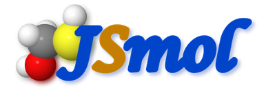
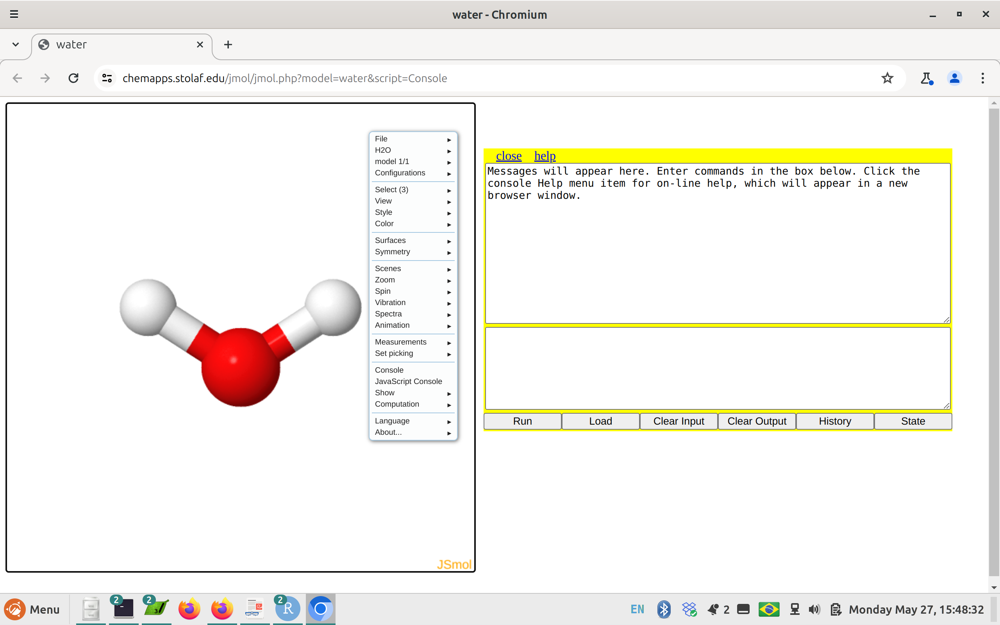

https://chemapps.stolaf.edu/jmol/jmol.php?model=water&script=ConsoleMoléculas Voadoras
Introdução
Moléculas Voadoras é apenas um título engraçadinho pra apresentar moléculas de forma tridimensional. Para isso utilizamos um programa de visualização 3D chamado Jmol. O programa é distribuido livremente (licença GLPL, GNU Lesser General Public License), e permite uma série de visualizações coloridas, como movimentos de translação e rotação das moléculas, ampliação visual, cálculos de distância, ângulos, estruturas e superfícies, otimizações moleculares, animações, dentre outros.
Visualização na web
Você pode baixar o programa no website acima, ou utilizá-lo diretamente num navegador de internete, como abaixo. Experimente rotacionar a molécula de água com o mouse….
Agora um passo adiante, pra você observar suas próprias moléculas em qualquer navegador. Abra uma janela em seu navegador (Edge, Firefox, Chrome, etc) e digite o seguinte caminho: vá ao link abaixo:
Ou…se quiser ir direto, basta clicar na logo abaixo, e que representa o applet JSmol que é utilizado para a visualização tridimensional (também chamada de renderização, um provável anglicismo !).
(https://chemapps.stolaf.edu/jmol/jmol.php?model=water&script=Console)
Arraste a janela amarela pra direita, pra você visualizar a molécula, nesse caso, uma molécula de água
Agora você pode “brincar” à vontade com a molécula. Primeiro, mexendo em seu mouse pra fazê-la girar. Pode usar também o botão de rolagem do meio do mouse, pra ampliar ou reduzir seu tamanho na tela.
Agora você pode “brincar” à vontade com a molécula. Primeiro, mexendo em seu mouse pra fazê-la girar. Pode usar também o botão de rolagem do meio do mouse, pra ampliar ou reduzir seu tamanho na tela.
E pode fazer um montão de outras coisas legais. Pra isso, há duas opções. A primeira envolve o “montão” de coisas por uso de clique de mouse, bastando você clicar com o botão esquerdo desse em qualquer lugar do campo da molécula, como aparece na figura abaixo.

Mas dentro de uma lógica do Ensino Reprodutível, contudo, é bem mais chique se utilizar linhas de comando digitados como num bloco de notas. Nesse caso, o bloco de anotações é o da janelinha amarela, na parte de baixo. Para utilizá-lo experimente digitar e teclar Enter após o seguinte comando:
spin 50 Show, não ?! Para fazer a molécula parar de girar, digite:
spin off Se quiser testar outros comandos rápidos com a molécula, experimente os comandos abaixo. Você pode executar um a um, ou mais de um por vez, separando-os por um “;”.
cpk # representação de bola e vareta
wireframe only # representação de arame
background yellow # plano fundo
dots on # nuvens de van der Waals
color magenta # coloração
color cpk # coloração padrão de modelos atômicos Existe uma infinidade de comandos que se pode experimentar com uma molécula, e para isso eu sugiro tutorial dirigido também nos moldes de um Ensino Reprodutível no site bioQuanti, especificamente no capítulo sobre comandos do Jmol.
Carregando uma molécula armazenada no computador
Sem entrar em muitos detalhes, você tem algumas formas para carregar uma molécula de seu interesse no Jmol online visto acima. A mais “chique” é por clique e arraste de mouse do arquivo salvo no computador. Para isso, baixe o arquivo abaixo (…quase um pleonasmo) numa pasta qualquer em seu computador.
——-> arquivo pra baixar: aspirina
{kind=link}
Pra certificar-se que o arquivo trata de uma imagem de molécula, localize-o e abra-o no seu explorador de arquivos, como você faria com qualquer imagem.
Agora…a mágica !!! Volte ao explorador de arquivos. Agora clique no arquivo baixado e arraste-o para o site do Jmol online em que está a molécula de água.
Agora…a mágica !!! Volte ao explorador de arquivos. Agora clique no arquivo baixado e arraste-o para o site do Jmol online em que está a molécula de água.
E Voilá !!!!! A molécula de aspirina é carregada “viva” nas nuvens !!!! E pode ser trabalhada de diversas maneiras, como acima.
Existe uma infinidade de moléculas que podem ser baixadas da internete pra se observar e estudar, tais como fármacos, biomoléculas, cristais, e mesmo organismos simples, como vírus inteiros. Seguem alguns exemplos se você quiser experimentar:
- Cafeína, um poderoso estimulante;
- Insulina, a proteína cuja falta está relacionada ao diabetes;
- Celulose, a principal fonte de carbono do planeta;
- Um fago (vírus), dispensa palavras (mas tenha paciência, é grandão e carrega lentamente).
{kind=link}
{kind=link}
{kind=link}
Para mais moléculas, sites e truques do Jmol, consulte o link correlato, sobre o uso do programa e diversos exemplos no site bioQuanti.
Exemplos de sites “recheados” de moléculas renderizáveis em 3D
- 3dChem - moléculas orgânicas e de interesse clínico, e biomoléculas.
- ChemTube3D - banco de moléculas orgânicas e animações interativas.
- Proteopedia - site nos moldes do Wikipedia, embora para proteínas. 1.PubChem - site da Biblioteca Nacional de Medicina dos E.U.A., com um vasto campo de busca pra pequenas moléculas.
- Virtual Museum of Minerals and Molecules - como traduzido, um banco de dados de minerais e moléculas.
Ensino Reprodutível e um script (meio exagerado) para observar moléculas pelo Jmol
A essência do Ensino Reproduzível é permitir que qualquer pessoa execute, altere, ou crie um trecho de código redigido em um bloco de anotações comentado (um script) para determinado alvo no ensino, compilando-o num programa gratuito.
Dessa forma, é possível imaginar que uma combinação de comandos (códigos) do Jmol igualmente produza uma imagem de molécula em 3D em que se deseja, por exemplo, focar em deteminado tema de sua estrutura. Para ilustrar esse potencial execute o trecho de código a seguir diretamente na janela do Console do Jmol (aquela de aba amarelinha).
Não se preocupe com a quantidade de comandos; estão aí apenas para ilustrar seu potencial de aplicação. Mas, caso deseje conhecer um pouco mais sobre os comandos do Jmol, faça uma visitinha à página de Comandos do site Bioquanti.
background black # cor preta do plano de fundo
load $cholesterol # carrega a molécula de colesterol
delay 1 # aguarda 1 segundo
background white # altera a cor do plano de fundo
spin 80 # gira a molécula
delay 3 # ...por 3 segundos
spin off # interrompe a rotação
cpk # renderiza como modelo de preenchimento
color cpk # coloriza no padrão de modelos moleculares
isosurface molecular # renderiza a superfície
spin 30 # gira mais um poquinho
delay 6 # ...também por 3 segundos
spin off # interrompe novamente a rotação
zoomTo 0.5 *3 # amplia 300% na tela durante 1 segundo
isosurface off # retira a superfície molecular
wireframe only # retorna à representação de varetas
wireframe 50 # espessura das varetas
zoomTo 5 *0.01 # ... e vai sumindo aos poucos Se gostou, tente repetir o trecho acima, alterando num primeiro momento alguns dos valores do trecho. Num segundo momento, carregue outra molécula que esteja nas nuvens substituindo a 1a. linha do código (
load $outra.molécula).